Click on the Start free button.

Once registration is complete. You will need to log into the Azure portal to continue the demo setup process.
This demo should take about 10 minutes.
The goal is to demonstrate the ability to build an application for multiple mobile platforms using a lot of shared code. In this demo, we are not focusing so much on the Xamarin terms or technology, but to show that this can be done.
Hyper-V enabled PC. Required for the Visual Studio UWP and Visual Studio Android emulators.
Internet connection is required in order to setup and run the demos.
You will need Visual Studio 2015/ or Community edition with Update 3
To download Visual Studio 2015 Community edition, https://www.visualstudio.com/vs/mobile-app-development/
Visual Studio Android emulator: https://www.visualstudio.com/vs/msft-android-emulator/
If you encounter issues with connecting Visual Studio debugger with the Visual Studio I would recommend following the steps from this blog article: http://dotnetbyexample.blogspot.ca/2016/02/fix-for-could-not-connect-to-debugger.html
(Optional) Mac for compiling and run the iOS projects. Mac is also required to use the XCode designers within Visual Studio for PC or Mac.
An active Azure subscription is required to host both the data and images for the demo mobile app.
Click on the Start free button.
Once registration is complete. You will need to log into the Azure portal to continue the demo setup process.
Make sure to create your Azure account before the event.
Setting up the demo takes a few minutes so make sure to create it before the presentation. Note that the you’ll reuse the same services in sessions 2 demos.
Setup instructions for both Visual Studio 2015 and Xamarin can be found at Microsoft Developer Network website: https://msdn.microsoft.com/en-us/library/mt613162.aspx
To Verify your Xamarin environment, Microsoft Developer Network has a guide walk through of the steps: https://msdn.microsoft.com/en-us/library/mt488769.aspx
Create a resource group to organize and manage all the Azure services that will be used by the demo.
Click on the Add button and enter the name XamarinDemos for the new resource group. The name only needs to be unique with the same Azure subscription. First, open the resource group window (1). Next, click the Add button (2). In the create resource group window, enter the name XamarinDemos(3). Next, make sure to resource group location to your closet region from the drop list (4). Last step, click the Create button to complete the creating the resource group (5).
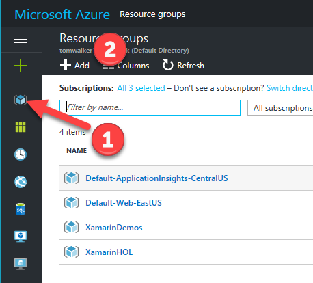
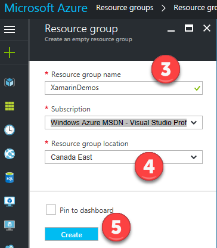
Next, Add a new “Mobile Apps Quickstart” to the resource group created in previous step. Click on the Add button (1). Enter “Mobile Apps QuickStart” into the text search (2). Click on the Mobile Apps QuickStart (3). Finally click on the Create button (4).
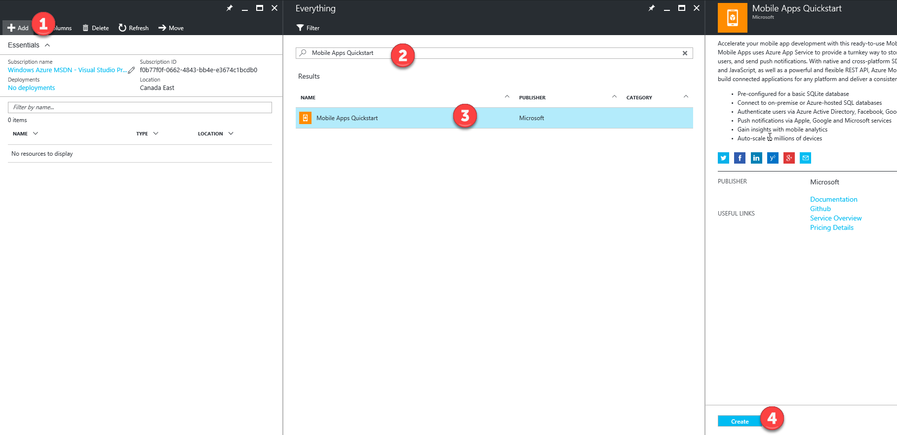
At this step we need to name the new Mobile App service. The name has to be globally unique globally Azure. For this setup process I’ve used the name “gpstagimagemobileapp” (1).
TIP: to avoid Azure charges make sure to set the App Service plan to the free tier. I’ve labelled in the above diagram after naming the Mobile Apps Service.
Click the App Service plan (2).
Click the Add New button (3).
Enter a name for the service plan. It must be unique with the Azure subscription (4).
Click View All on the top right of the pricing tier list (5).
Scroll down to locate the F1 Free tier (6)(7).
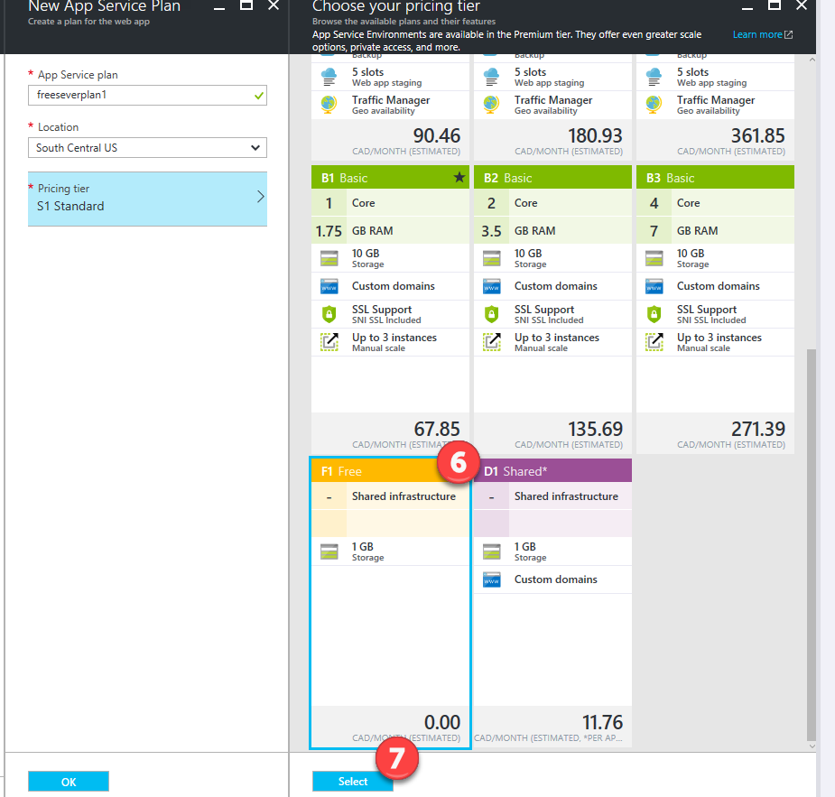
Next, we need to add a ‘Storage account’ service to our resource group. Make sure to select the Storage account with the category of ‘Storage’ (1) (2) (3)
Make sure to give the storage account a unique name. For this setup process I’ve chosen gpstagimagestorage (1) as the name. Also, make sure to select Locally-redundant storage (LRS) for the replication setting (2). Click create to make the storage (3).

After the Azure setup process is complete for the storage account. Click on Refresh in the XamarinDemos group to update the list of services (1).
Select the storage account
Next, In the settings section select Access keys. Copy both the Storage account name and the key 1 value. We will need both of these to complete the data setup for the demo. (1)(2)(3)
Go to the Solutions folder with this content, locate the Demo1.1.zip file, extract it to a new folder under your Documents folder and locate the solution (.SLN) file.
Within the solution locate the project folder of SetupDemoData.

Within the SetupAzureData project, locate the file labelled App.config. Update the storage name and storage keys with the values that copied from the previous step.
Make sure to set the SetupAzureData as the starting project.(1)
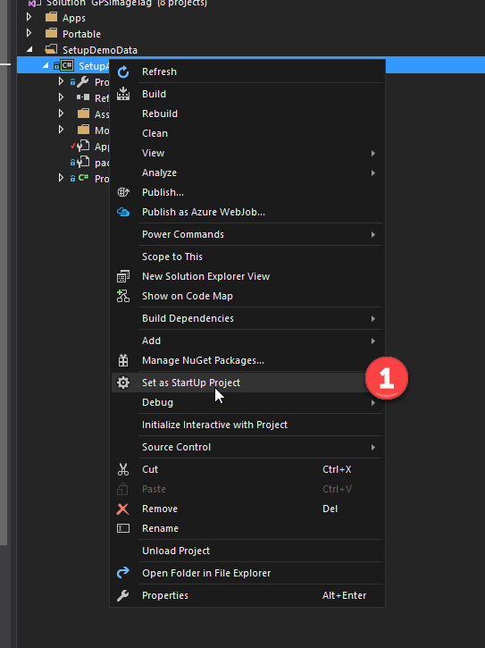
Now run the project, this will create the data and upload the photos to Azure
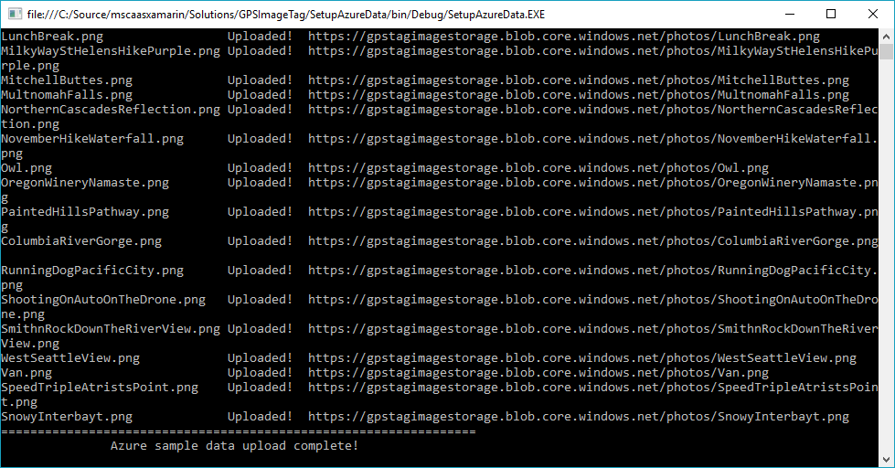
Once setup is complete, verify by checking that storage account has a new container labelled photos. For the storage service, click on Containers (1), find the photos container (2) and see the images uploaded (3).
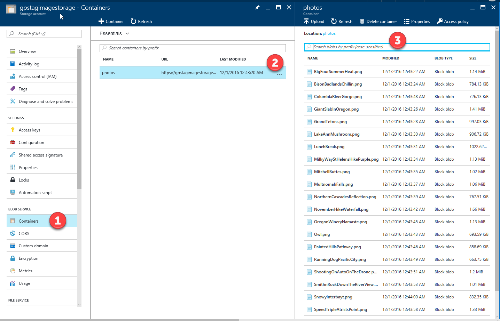
Within the Azure portal, navigate to the mobile app service.
Select the Mobile app service to bring up its settings panel (Azure blade).
Locate the option “Easy tables” (1).
Click on the “Add from CSV” option (2).
Locate the photo.csv file (1) created by SetupAzureData console app. This will be located Documents folder. Then, click on the Start Upload button (2).
To verify that data has been uploaded, click on the new Photo table to see the data records.
Next, we need to copy the mobile app url for the demo. This can be found in the Overview option (1). Just copy the URL for the mobile app service (2)
Now that we have the mobile app url we need go to AzureServices.cs (1) located in the GPSImageTag.Core project and paste in the Url (2).
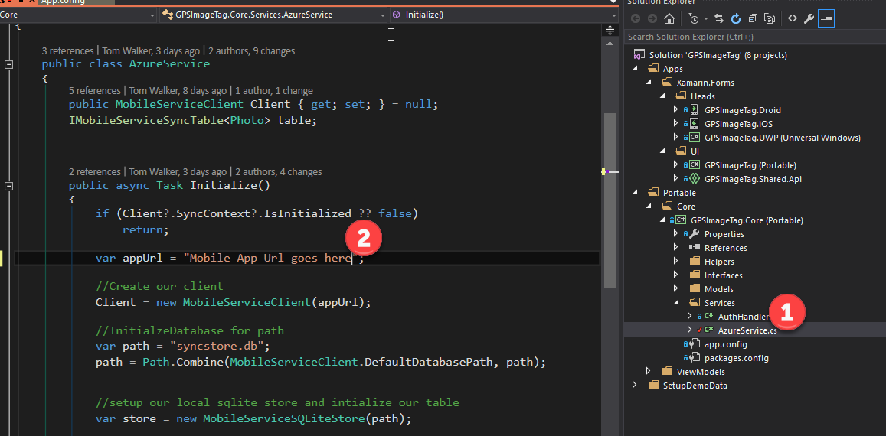
We will need to add the Azure Storage name and key to the into the Configuration.cs file located in the Apps-> UI-> GPSImageTag.Shared.Api Shared project.
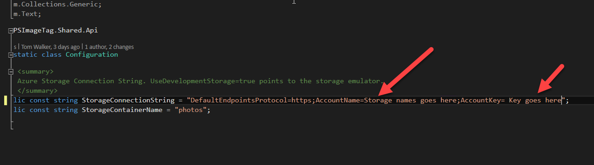
Verfiy the setup is complete, set the GPSImageTag.UWP project as the Startup Project (1).
Press F5 to run the application.
Press the Sync Photos, you will see a list of images with title and description (1).
During the demo, there’s no need to explain all the functionality of the code within the project. The focus here is to show the solution structure and to highlight that the code for both the UI and business logic is shared across the native project heads (ie UWP, iOS and Android).
For the demo we need to show that we can take a picture from the UWP app and show it in the Android App. A good point to mention here, is because we are utilizing Azure both the UWP an Android mobile clients have access to the same data. So the final step will be to take photo app with the Android app and have it displayed in the UWP client
Select the Solution and bring up the Properties option (1).
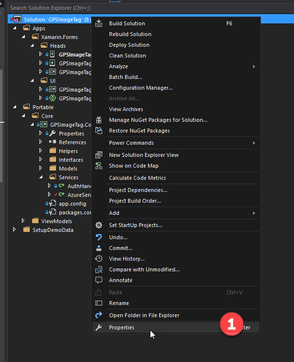
Next, select Multiple Startup projects. Then set both the UWP and Droid as the starting projects. Click Apply to save.
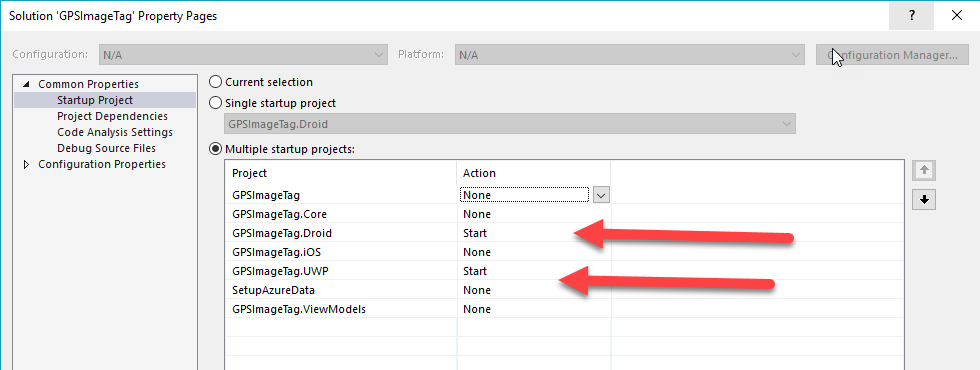
In the UWP demo app, navigate to the Upload Photo page (1). Click on the Take Photo button. Snap a picture of the audience (2).
Explain what it is doing. The app is pulling down data and photos from Azure on the first screen. On the Upload Photos screen that app can take a photo use the device’s camera and upload it to Azure.
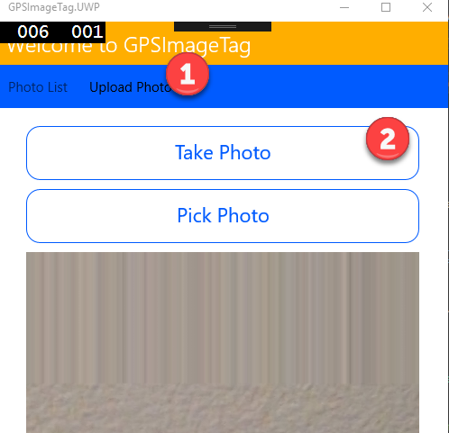
Now we need to name the photo (1) and give a brief description (2). Then click the upload button (3).
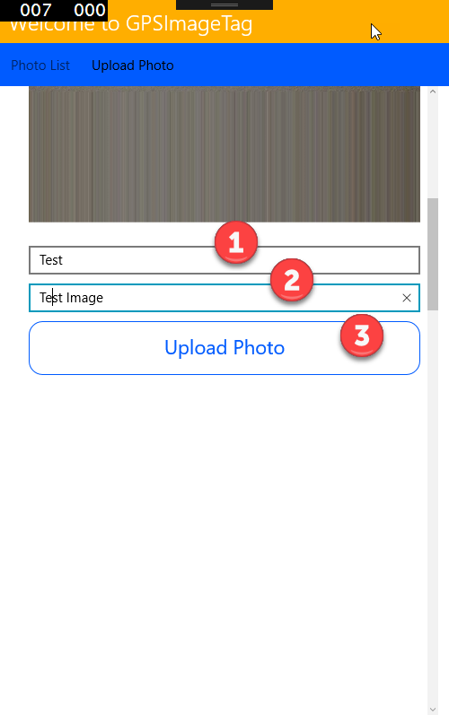
In the Droid project, click on Sync Photos button (1) and scroll through the list images to locate the test image from the previous step.
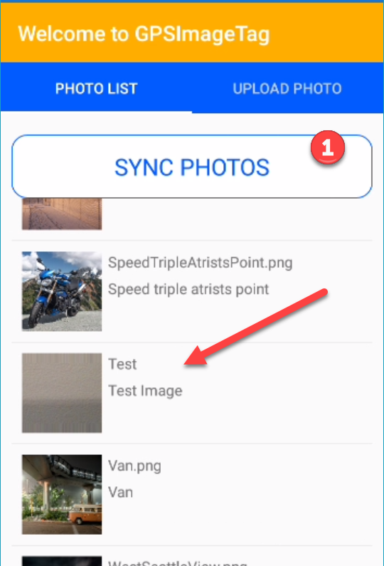
Now using the Android app, take a picture (1), give it a name (2), description (3) and Upload (4).
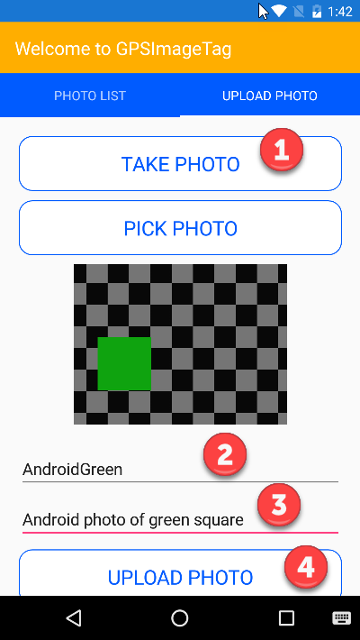
Open storage account for the demo on the Azure setup (1). Go to Blobs (2).
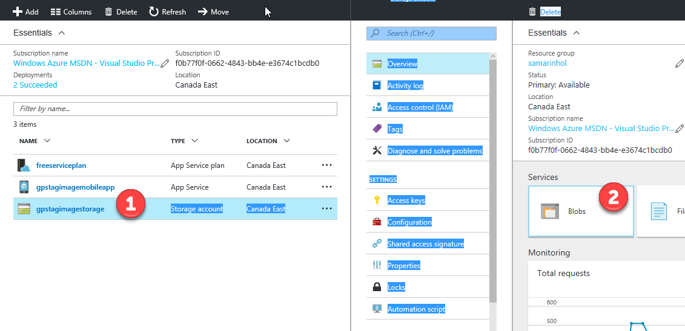
Verify that the image name from the previous setup is in the photos container (1).
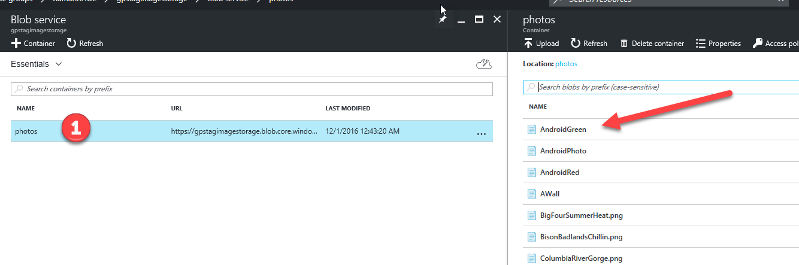
Go back to the UWP client and press the Sync Photos button to review the list. The Android photo will appear at the top of the list.
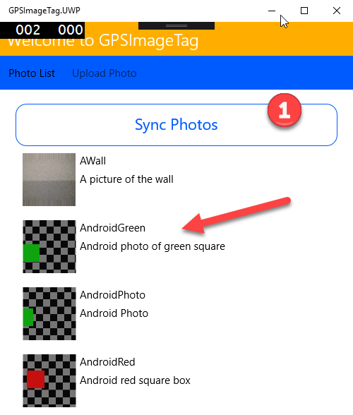
If you are not continuing to the next session demos you can delete the Azure resource group to remove all the services used in this demo.
To delete the resource group from this demo, go into to the Resource group section within the Azure portal. Click on the ellipse (3 dots) button next to the resource group from this demo. Next, click on the delete action in the menu.
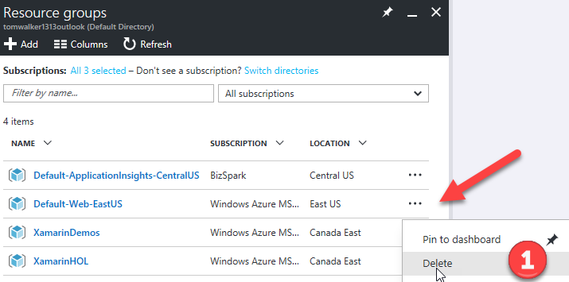